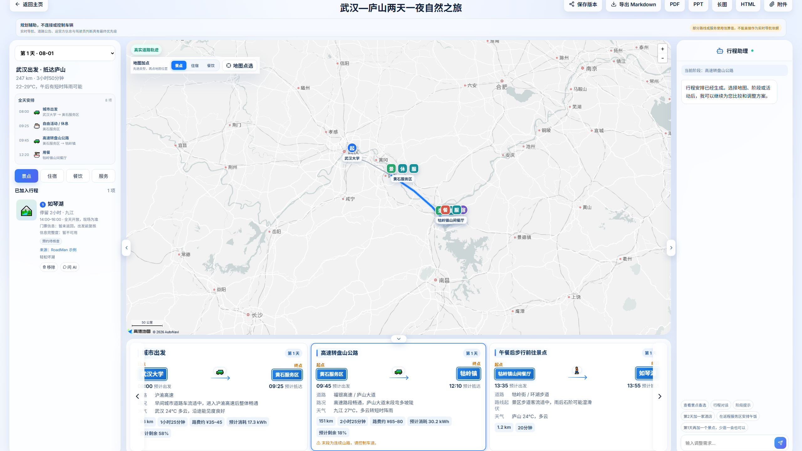
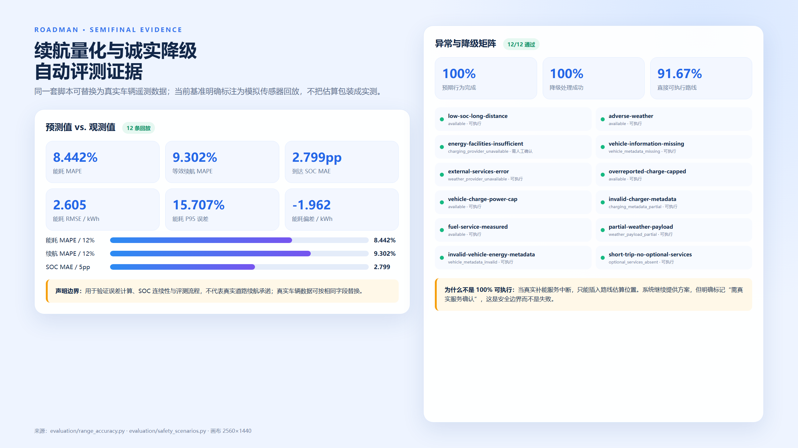
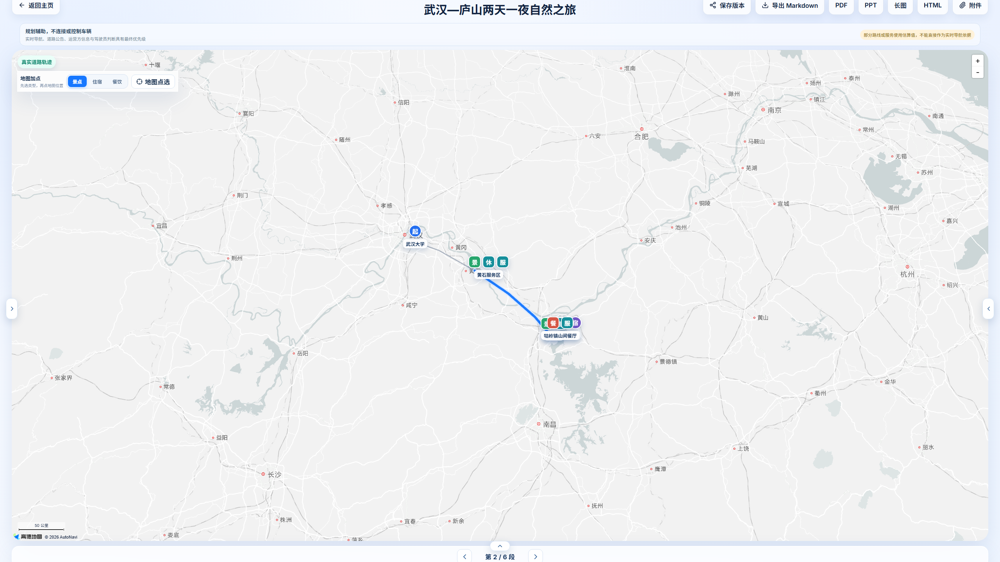
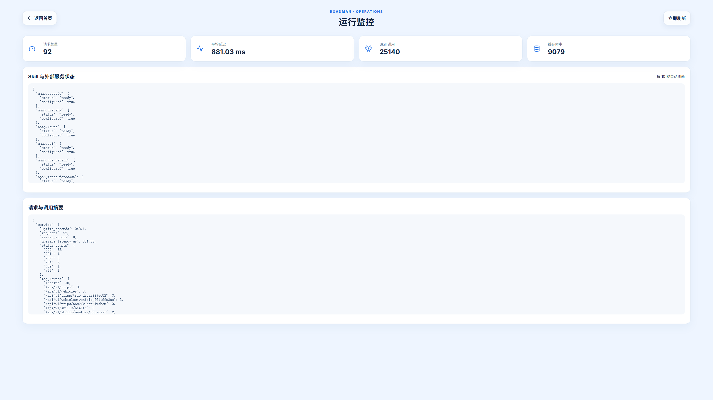

多智能体自驾与中短途旅行规划工作台
围绕评委提出的四个问题：续航真实化、可复现 Demo、差异化与商业化、安全边界与诚实降级。后半部分集中汇报 8 月 16 日以来的其他功能提升。

完整产品画面：左侧逐日安排、中间真实地图与阶段、右侧智能体协作消息来自同一行程快照。
| 数据可用性 | 计算方式 | 对用户的公开说明 |
|---|---|---|
| 有桩侧/车辆实测量 | 直接采用实际补入电量或加油量，按电池/油箱剩余空间封顶 | 标记为实测，不再额外估算 |
| 有桩功率和时长 | 取桩功率与车辆最大受电功率中较小值，乘时长和 90% 效率 | 公开功率、时长、补入量与估算依据 |
| 功率缺失 | 车辆上限与 60 kW 保守公共快充值取小 | 黄色提示“功率为估算，出发前确认” |
| 补能服务中断 | 只插入路线上的估算检查位置 | 明确“不可直接执行”，不冒充真实营业桩 |

评测图完整展示：左侧为 12 条回放的续航误差，右侧为 12 个异常与降级场景。数据直接读取评测 JSON，不手工填写。
| 角色 | 擅长处理 | 不能越过的边界 |
|---|---|---|
| 需求理解 | 口语日期、同行关系、偏好、必达点和必要追问 | 信息不足时必须澄清，不能猜地点或人数 |
| 目的地研究/策展 | 多源候选、代表性地点、旅行节奏和适配理由 | 不能凭空创造候选，采用项必须留来源 |
| 行程编排/编辑 | 跨城、本地活动、酒店、餐饮与用户修改意图 | 修改先预览再确认；失败不覆盖正式行程 |
| 确定性校验 | 路线连续、时间冲突、三餐住宿、驾驶休息、SOC 和返程闭环 | 硬安全结论优先于模型文本 |
产品截图完整显示。地图、日程、阶段和协作消息由同一 Trip 快照驱动，不是拼接示意图。
Compose 启动五个服务；健康检查确认 API、队列和前端状态。
后端测试、续航误差、安全矩阵、前端单测与生产构建。
新建、工具调用、规划、编辑、重排、回滚和五格式导出。
| 维度 | 高德公开重点 | 马蜂窝公开重点 | RoadMan 当前差异化 | 用户获得的直接价值 |
|---|---|---|---|---|
| 核心任务 | 实时交通、路线、导航、停车与充电信息 | 攻略、游记、灵感、当地玩乐和旅行产品 | 把需求、路线、酒店、三餐、补能、天气和返程合并为一条跨日状态链 | 减少地图、攻略、备忘录之间的人工拼接 |
| 新能源余量 | 提供充电设施与路线相关能力 | 非核心公开定位 | 补能前后 SOC、实测/估算依据、车辆受电上限和安全余量连续传播 | 不仅“附近有桩”，还能判断阶段是否留有余量 |
| 路书完整性 | 路线点与路书分享 | 目的地内容与行程灵感 | 三餐、住宿、连续驾驶休息、跨天拆段和返程闭环统一校验 | 减少漏餐、漏住、超长驾驶和返程断链 |
| 修改闭环 | 路线点编辑 | 内容与商品选择 | 自然语言/地图编辑 -> 影响预览 -> 用户确认 -> 路线、时间、酒店和 SOC 全局重算 | 局部改动不会留下旧路线或时间冲突 |
| 来源与降级 | 以实时地图服务为核心 | 以内容与交易服务为核心 | 采用候选、工具调用、错误码和估算状态可追溯；缺失时不虚构 | 知道哪些是事实、估算和待确认项 |
2-7 天多日路线、舒适节奏、稳定酒店、补能余量和驾驶休息。
飞机/高铁与机场/车站接驳、酒店和逐日活动放在同一时间线。
删点、加点、换酒店或延长停留后，需要全局重排而非改几句文字。
| B2C 订阅 | 免费基础路书与单次导出；订阅提供多车辆、进阶能耗、版本、协作和出发前风险复核 |
| B2B2C 白标 | 面向车企、租车和营地输出“车型参数 + 多日路书 + 补能余量”的 API/SDK |
| 企业差旅 | 多人偏好、固定参观点、班次、酒店和时间窗；补齐组织权限后进入 |
| 异常 | 系统处理 | 用户看到的诚实边界 |
|---|---|---|
| 天气服务不可用 | 保留基础风险模型继续规划 | 显示天气数据降级，不生成逐时温度或降水概率 |
| 天气部分字段畸形 | 忽略坏字段，保留可解析字段 | 明确“部分可用”，仍可识别有效强降水信息 |
| 补能服务中断 | 按路线插入估算检查位置 | 路线可阅读但不可直接执行，出发前必须确认真实服务 |
| 充电功率缺失 | 车辆上限与 60 kW 保守值取小 | 显示估算功率、时长和计算依据 |
| 车辆能量异常 | 封顶/归一化并使用保守默认值 | 明确车辆数据已被归一化，不静默修改 |
| 地图道路点列缺失 | 使用带说明的示意连接 | 不把直线称为真实道路轨迹 |
| 班次或票务缺失 | 保留未知/不可用状态 | 不虚构车次、航班号、票价或营业状态 |
| 语义模型不可用 | 暂停依赖语义判断的步骤 | 不靠关键词猜“新疆”是目的地还是餐馆 |
直接可执行率不是 100%：补能服务中断时只有估算位置，系统主动降为“需确认”。这是安全设计，不是测试失败。
稳定“下周三玩三天”“周日晚八点前回来”等相对时间；解析显式飞机/火车/自驾语句，信息不足时进入澄清。
行政区父级与明确子城市先裁决真实目的地；重规划时语义锚点变化同步清除旧坐标，再研究代表性候选和住宿基点，避免标题与地图错位。
超长驾驶按每日安全上限拆分，自动加入休息、过夜和补能；拆分后保持能耗、时间和路线连续。
长途移动不再丢失午餐/晚餐；跨日抵达后重新连接酒店，下一天从真实住宿锚点出发。
用户明确飞机/火车时查询真实班次并验证编号、站场和时刻；全部来源失败时返回不可用，不生成占位班次。
用户没有指定交通方式时保持自驾；不会因为时间紧张自动切成飞机或火车，约束冲突时直接说明。
合并景区入口/停车场等同地变体，综合研究证据、适配性和相邻转场距离；活动只采用当日路线经过的候选，住宿按代表景点选基点并跨日复用。
被用户删除或替换的地点进入持久排除集合，重排和修复不会偷偷把旧地点加回来。
10 条口语/模糊/冲突输入预检通过；7 条完整规划通过；E01-E10 地图与自然语言编辑全部通过。
建立初赛后稳定基线。
修复相对日期、中心住宿、交通终点和标记去重。
跨天拆段、休息、补能降级、移动日三餐和酒店闭环。
连续 SOC、误差评测、安全矩阵、可观测性、证据和 E2E。
真实快捷需求、浏览器位置天气、聚焦式规划动画、目的地锚点校准、路线感知景点、零距离接驳抑制与动态公开车型补充。

地图聚焦态完整画面：左右栏与底部详情可折叠，只保留两侧展开入口和阶段切换；真实路线与地点保持可见。
同地景点变体合并并保留来源；活动卡只显示路线真正经过的候选，同一酒店/返程锚点不再出现零距离移动卡。
等待层每幕只突出需求、搜索、候选或 Agent 协作；进入工作台后左、右、底栏均可收起，评审可聚焦地图与路线。
地图选点、添加、删除、替换先显示影响预览；确认后统一重排，失败不污染正式版本。
Markdown、HTML、PDF、PPTX 与长图共享同一冻结快照，修改未完成时阻止导出旧结果。
汇总请求、Skill 调用、延迟、缓存、错误码和 Agent Token；不记录密钥或模型私有思维链。
行程级联删除覆盖消息、版本、任务、附件和关联审计；附件解析与清理补齐回归测试。
主目录缺少具体版本时并行查询四类公开数据源；纯电、混动、燃油参数保留来源、缺失和估算标记，再由用户确认保存。
产品式 README、8 张功能特写、5 张 2560 x 1440 复赛证据图、中文/英文参赛材料。

运行观测完整画面：请求总量、平均延迟、Skill 调用、缓存和服务状态集中展示。
主 Demo、奇怪输入、异常分支和编辑 E01-E10 集中维护，成功标准与截图位置统一。
产品页与评测页按 2560 x 1440 输出；清单记录来源、尺寸和生成时间，避免手工拼数。
真正等待规划完成，再执行编辑、重排、回滚和五格式导出，结果保存为机器可读证据。
中文 README 为默认入口，补英文版本、四份复赛专项文档、数据合规和仓库说明。
实际补能优先，功率估算次之，缺失时保守降级；12 条回放量化误差并明确非实车。
五服务启动、多智能体与校验分工、一键检查、完整旅程和编辑回归。
连接内容与导航，聚焦高约束多日旅程；B2C 订阅与车企/租车白标并行。
外部服务失败时公开降级；不接车辆控制；数据最小化并支持行程级联硬删除。
| 时间 | 画面 | 要讲清楚的结论 |
|---|---|---|
| 0:00-0:35 | 首页需求输入 | 目标用户是高约束旅行者；系统先澄清再规划，不是一轮 Prompt。 |
| 0:35-1:20 | 规划工作台 | 地图、日程、住宿、餐饮、补能和协作消息来自同一状态，后台渐进生成。 |
| 1:20-2:05 | 续航阶段与评测 | SOC 连续传播；实际补能优先；指标来自 12 条模拟回放，明确不是实车承诺。 |
| 2:05-2:45 | 编辑预览与重排 | 修改先预览再确认；路线、时间、酒店和 SOC 全局重算；失败不污染原版本。 |
| 2:45-3:25 | 异常降级 | 补能服务中断时路线降为需确认；天气和班次缺失不伪造实时事实。 |
| 3:25-4:00 | 指标与商业价值 | 与地图/攻略的差异是“执行编排层”；说明目标用户、订阅/白标路径和安全边界。 |